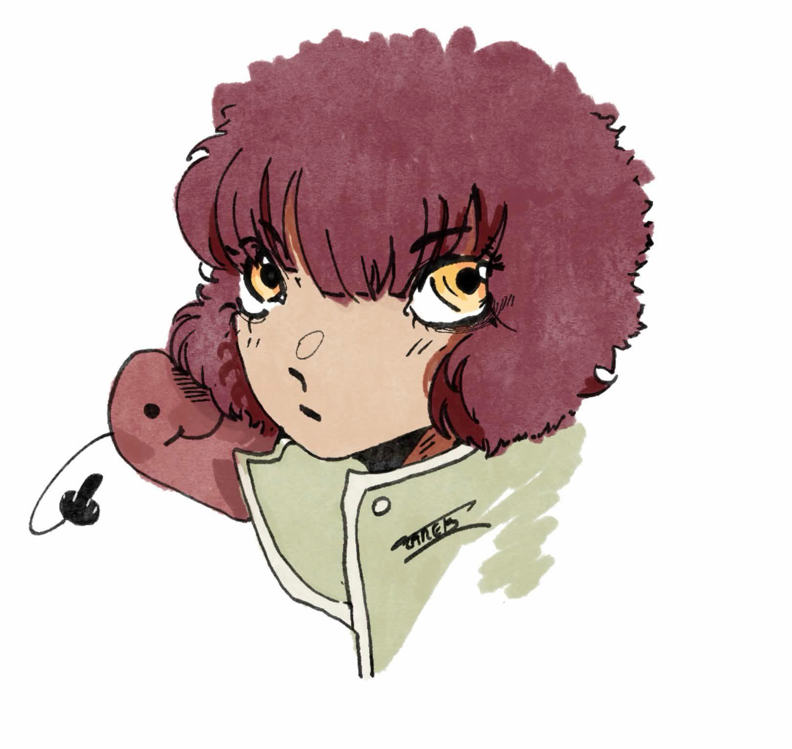
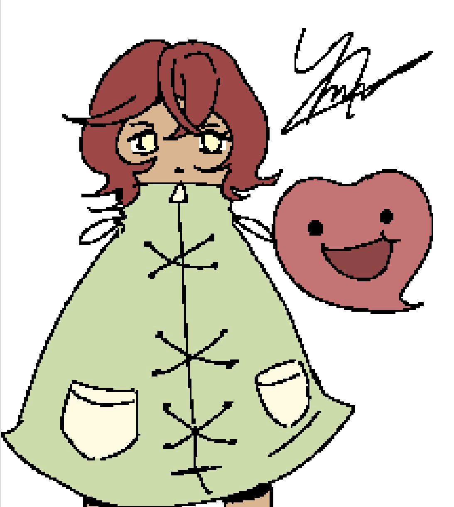
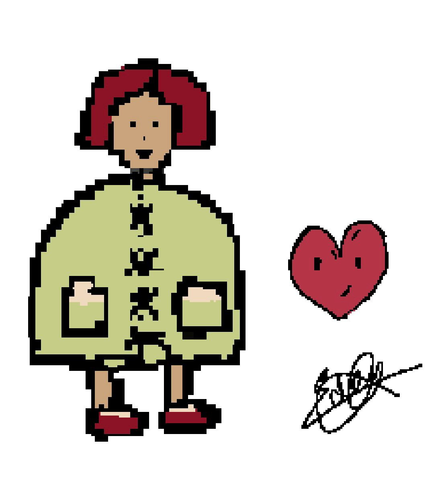
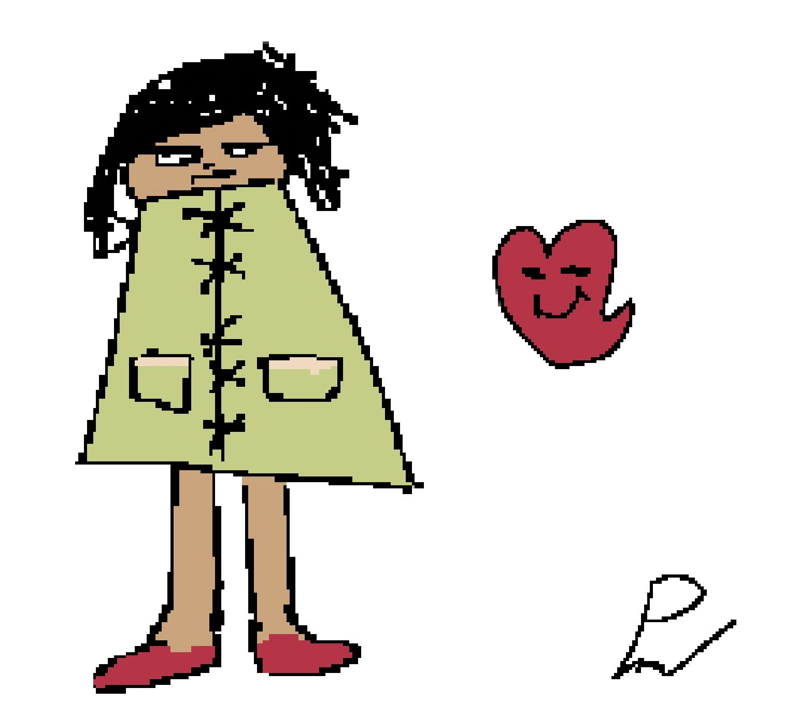
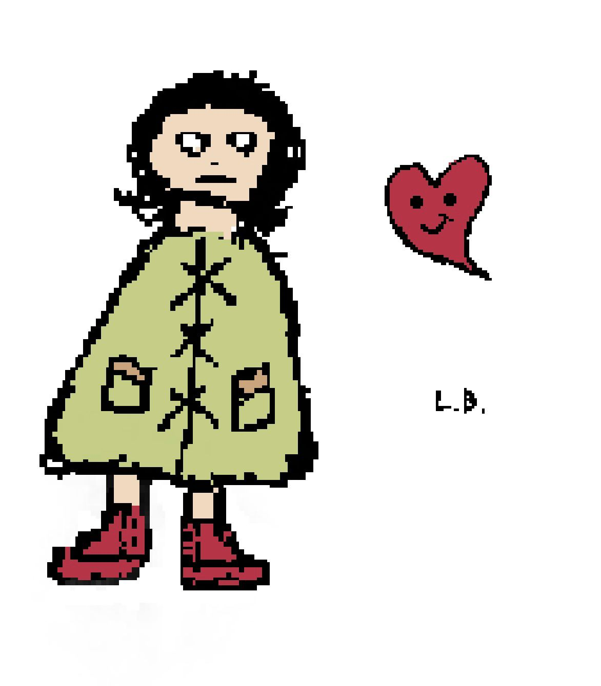

OUR TEAM
Our group is a very diverse one. Indeed, we are five very different people, some of us are very artistic while some others are more technical oriented, but we mobilized our ideas to create an interesting game. It is a two player game in 2D where each one has a different type of ability. It is a Roguelike game with five different levels representing the 5 known stages of grief: denial, anger, marchandise, sadness, resignation, acceptation and reconstruction. It will be represented through the 1st player character, the second player representing the accumulation of the grief itself.
.jpeg)
Tarek
Graphic designer, Team chief and Developer.
Tarek shares his work on the sprites with Amelie, and also focuses on the music with Pierre. Since the beginning, Tarek has helped a lot on the more artistic side of our project, although he also helped for the implementation of some scripts in the game.

.jpeg)
Amélie
Lead Graphic Designer, Manager and Developer.
Amélie is the leader of the artistic part of our project but also masters the coding side of our project. She also worked on sprites, the menu but also worked with Eden for the backgrounds of the game. On the more technical side of our game, she implemented the entire menus, the saving system with an SQL database, worked on the ennemis, non playable characters, linked the different parts on the game and more.

.jpeg)
Eden
Website Lead, Graphic Designer, Mediator, Developer.
Eden focuses more on the artistic side of the game, with the creation of the backgrounds and some sprites, but she also developed the entierty of the website and helped with the implementation of the scripts for the generic and the first moments in the game.


Pierre
Developer.
Pierre has a big impact on the server of our project. He's the one doing the multiplayer, and everything that evolves around that. In deed, he focused on the entierety of the network architecture, so, as said, the server and the mutliplayer. He also worked on the room's code, so on the transitions and randomizations appearance of the rooms, but also on some special rooms, and the progression system. He also focused on the items and the weapons, more particularly on the effects and the rarity of them. One of his major focus was also on the cards, so everything around them except for the effects. He also works on the music of our game.


Lucas
Lead developer, Manager.
Lucas only works on the coding aspect of the game. He elaborates the enemies implementation and the collisions with the platforms.
